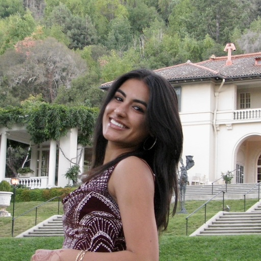

Hi! I'm Nikita Narang, a student at Mountain View High School in Mountain View California looking to combine my artistic passion with engineering and computer science.
My growing interest for mixing the arts and sciences started in 2021 after I tore my first ACL playing soccer.
After my injury, I spent a few months looking for an interest which could fill in the time I had gained from losing soccer.
I discovered a passion for painting clothes and started to experiment with different materials and designs.
A few years later, in 2024, I retore my ACL and meniscus about a year after returning to soccer.
This second injury led me to commit to my art even more and create this online portfolio.
I also started learning how to do nails, another form of art which I can wear and do on others as well.
As I now recover from my second injury, I am thankful for the relaxation and learning that I have gotten from the time I spend creating something.
I look to continue expanding my customized pieces to others and show them what I have accomplished during difficult times.
I coded this website using HTML and CSS, something which I have been practicing for several years through camps and computer science classes.
I wanted to mix my talents in computer science with my portfolio to combine both the artistic and STEM sides of my life.
Through computer science and engineering Career and Technical Education courses at my school and parade float building volunteer work, I have learned different ways to mend these topics to create something truly worth exploring.
On this site, you will be able to look through many of my art pieces, many with different mediums and themes.
My art ranges from 2021 - when I got my first surgery - to now.
Some of my pieces are replicas of animals or landscapes, and many are recreations of photos I have taken while traveling.
I hope that you can look at these works of art as projects which have carried me through an unusual last few years, and I hope that they give you the same joy they brought me.